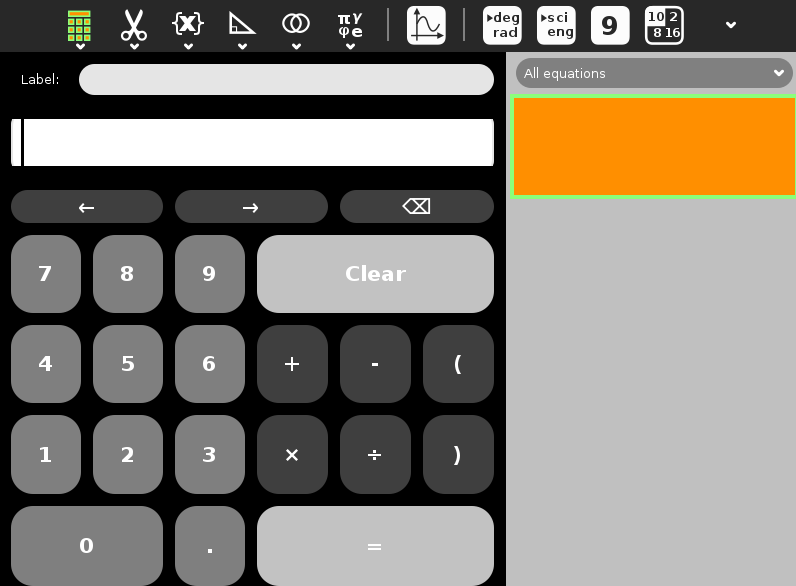

Calculate¶
About¶
The Calculate Activity is an infix-notation graphing calculator. Type an expression or select components from the toolbars, and press Return to evaluate it.

Where to get Calculate¶
Calculate activity is available for download from the Sugar Activity Library: Calculate
The source code is available on GitHub.
Using Calculate¶
For those who have used a scientific calculator, most of the functions of Calculate will be quite familiar.
The Toolbars are
Activity, Calculate icon: Name session, Journal entry description, collaborate
Edit, scissors icon: Copy, Paste
Functions, {x}: Square, square root, reciprocal, exponential, power, logarithm, factorial
Trigonometry, triangle icon: sin, cos, tan, sin-1, cos-1, tan-1, sinh, cosh, tanh
Boolean, Venn diagram icon: and, or, =, !=
Constants, Greek letters icon: pi, e, gamma, phi
Plot: Hover menu offers Help
Degrees/Radian angle measure
Scientific/Engineering notation
Number of digits to show: 6, 9, 12, 15
Base: Decimal, binary, octal, hex
Exit
Getting help¶
To see a help option for plot, enter the command
help(plot)
on the text entry line.
The general help function is
help()
The list of help topics is available with the command
help(index)
including topics not supported on the menus. Help is not provided for the constants pi, e, gamma (Euler-Mascheroni Constant) and phi (Golden Ratio), but these can be looked up on the Internet. Clicking their icons inserts their numeric values.
Functions in Calculate¶
These are the list of functions available in Calculate Activity:
abs(x) - return absolute value of x, which means -x for x < 0
acos(x) - return the arc cosine of x. This is the angle for which the cosine is x. Defined for -1 <= x < 1
acosh(x) - return the arc hyperbolic cosine of x. This is the value y for which the hyperbolic cosine equals x.
and(x, y) - logical and returns True if x and y are True, else returns False
add(x, y) - return x + y
asin(x) - return the arc sine of x. This is the angle for which the sine is x. Defined for -1 <= x <= 1
asinh(x) - return the arc hyperbolic sine of x. This is the value y for which the hyperbolic sine equals x.
atan(x) - return the arc tangent of x. This is the angle for which the tangent is x. Defined for all x
atanh(x) - return the arc hyperbolic tangent of x. This is the value y for which the hyperbolic tangent equals x.
b10bin(x) - interpret a number written in base 10 as binary, e.g.: b10bin(10111) = 23.
ceil(x) - return the smallest integer larger than x.
cos(x) - return the cosine of x. This is the x-coordinate on the unit circle at the angle x
cosh(x) - return the hyperbolic cosine of x. Given by (exp(x) + exp(-x)) / 2
div(x, y) - returns x/y where y!=0.
gcd(a, b) - determine the greatest common denominator of a and b.For example, the biggest factor that is shared by the numbers 15 and 18 is 3.
exp(x) - return the natural exponent of x. Given by e^x
factorial(n) - return the factorial of n. Given by n * (n - 1) * (n - 2) * … * 1
factorize(x) - determine the prime factors that together form x. For examples: 15 = 3 * 5.
floor(x) - return the largest integer smaller than x.
inv(x) - return the inverse of x, which is 1 / x
is_int(n) - determine whether n is an integer.
is_prime(x) - Check if a number is a prime.For examples: is_prime(2).
ln(x) - return the natural logarithm of x. This is the value for which the exponent exp() equals x. Defined for x >= 0.
log10(x) - return the base 10 logarithm of x. This is the value y for which 10^y equals x. Defined for x >= 0.
mod(x, y) - return the modulus of x with respect to y. This is the remainder after dividing x by y.
mul(x, y) - return x * y
negate(x) - return -x
or(x, y) - logical or. Returns True if x or y is True, else returns False
pow(x, y) - return x to the power y (x**y)
rand_float() - return a random floating point number between 0.0 and 1.0
rand_int([<maxval>]) - return a random integer between 0 and <maxval>.<maxval> is an optional argument and is set to 65535 by default.
round(x) - return the integer nearest to x.
shift_left(x, y) - shift x by y bits to the left (multiply by 2 per bit)
shift_right(x, y) - shift x by y bits to the right (divide by 2 per bit)
sin(x) - return the sine of x. This is the y-coordinate on the unit circle at the angle x
sinh(x) - return the hyperbolic sine of x. Given by (exp(x) - exp(-x)) / 2
sinc(x) - return the sinc of x. This is given by sin(x) / x.
sqrt(x) - return the square root of x. This is the value for which the square equals x. Defined for x >= 0.
square(x) - return x * x
sub(x, y) - return x - y
tan(x) - return the tangent of x. This is the slope of the line from the origin of the unit circle to the point on the unit circle defined by the angle x. Given by sin(x) / cos(x)
tanh(x) - return the hyperbolic tangent of x. Given by sinh(x) / cosh(x)
xor(x, y) - logical xor. Returns True if either x is True (and y is False) or y is True (and x is False), else returns False
Where to report problems¶
Please report bugs and make feature requests at sugarlabs-calculate/issues.